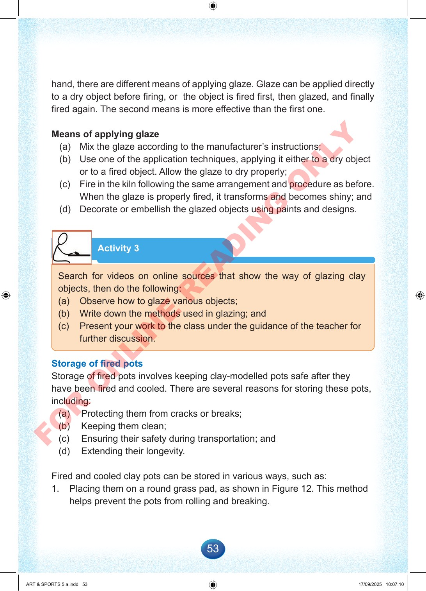

53
hand,
there
are
different
means
of
applying
glaze.
Glaze
can
be
applied
directly
to
a
dry
object
before
firing,
or
the
object
is
fired
first,
then
glazed,
and
finally
fired
again.
The
second
means
is
more
effective
than
the
first
one.
Means
of
applying
glaze
(a)
Mix
the
glaze
according
to
the
manufacturer’s
instructions;
(b)
Use
one
of
the
application
techniques,
applying
it
either
to
a
dry
object
or
to
a
fired
object.
Allow
the
glaze
to
dry
properly;
(c)
Fire
in
the
kiln
following
the
same
arrangement
and
procedure
as
before.
When
the
glaze
is
properly
fired,
it
transforms
and
becomes
shiny;
and
(d)
Decorate
or
embellish
the
glazed
objects
using
paints
and
designs.
Activity
3
Search
for
videos
on
online
sources
that
show
the
way
of
glazing
clay
objects,
then
do
the
following:
(a)
Observe
how
to
glaze
various
objects;
(b)
Write
down
the
methods
used
in
glazing;
and
(c)
Present
your
work
to
the
class
under
the
guidance
of
the
teacher
for
further
discussion.
Storage
of
fired
pots
Storage
of
fired
pots
involves
keeping
clay-modelled
pots
safe
after
they
have
been
fired
and
cooled.
There
are
several
reasons
for
storing
these
pots,
including:
(a)
Protecting
them
from
cracks
or
breaks;
(b)
Keeping
them
clean;
(c)
Ensuring
their
safety
during
transportation;
and
(d)
Extending
their
longevity.
Fired
and
cooled
clay
pots
can
be
stored
in
various
ways,
such
as:
1.
Placing
them
on
a
round
grass
pad,
as
shown
in
Figure
12.
This
method
helps
prevent
the
pots
from
rolling
and
breaking.
ART
&
SPORTS
5
a.indd
53
ART
&
SPORTS
5
a.indd
53
17/09/2025
10:07:10
17/09/2025
10:07:10
F
O
R
O
N
L
I
N
E
R
E
A
D
I
N
G
O
N
L
Y